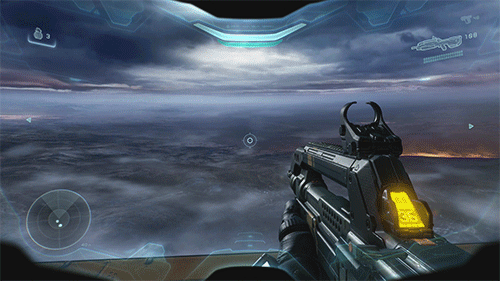

La programación de videojuegos es un proceso que pertenece a la creación de un videojuego. Este proceso es efectuado por un programador de videojuegos, gracias a la programación informática. Casi siempre, la programación de un videojuego se resume en repetir a trechos las siguientes acciones:
- Procesar las interacciones de un agente con su entorno según las entradas del usuario.
- Procesar los fenómenos indirectamente controlados por el usuario.
- Crear una imagen a partir de esas informaciones y mostrarlo en la pantalla (igual para el sonido).
El agente suele ser un personaje (generalmente llamado héroe) pero también puede ser un coche, una nave, o cualquier otra cosa. El entorno suele ser compuesto por una decoración estática y unos objetos interactivos (enemigos, objetos del inventario, puertas, entre otros.). El usuario manda entradas al programa por medio de un periférico como un joystick, un teclado o un ratón. La gestión de las interacciones consiste en prever las acciones posibles sobre el entorno, detectar si han estado provocadas, y procesar respuestas. Por ejemplo, para crear una interacción como "abrir la puerta", hay que decidir los procesos que permitirán su cumplimiento (por ej. el jugador tiene que pulsar un botón pensado a tal efecto, tiene que estar bastante cercano, más o menos haciendo frente a la puerta), luego, durante el juego, hace falta detectar si las condiciones están cumplidas. Si eso así, pues se genera una reacción: en nuestro ejemplo, mostrar en la pantalla la puerta abriéndose.
 |
 |
Los fenómenos indirectamente controlados por el usuario son varios y cambian mucho según el juego. Se puede tratar de procesar la inteligencia artificial de los agentes no-controlados por el usuario, gestionar las colisiones entre agente y la física (para los juegos que emplean un modelo físico realista).
Esas dos primeras partes pertenecen al gameplay (o sea, las reglas de interacciones) de un juego normalmente decidido por un diseñador de videojuego e implementado por un programador.
A medida que el nivel gráfico crece, la creación de un imagen y su display se hacen cada vez más complejos. Antaño casi exclusivamente en dos dimensiones, los entornos de los juegos ya son en la mayoría de los casos en tres dimensiones. En todo los casos, la imagen es construida poco a poco en un espacio de memoria (el framebuffer) y no está pintada en la pantalla antes que el dibujo sea acabó en su conjunto.
La creación de un imagen en dos dimensiones suele empezar por el dibujo de los objetos más lejos, y tal acercándose del jugador. Por ejemplo
- Creación del fondo (el background) ayudándose de unos mosaicos (los tiles) propicios a los sistemas de desplazamiento (el scrolling) o simplemente de un fondo de pantalla (como para los antiguos juegos de aventura).
- Añadidura de imágenes (sprites) usando un sistema de recorte que permite dibujar formas complejas mientras que es imprescindible que las imágenes sean rectangulares en la memoria.
La creación de un imagen en tres dimensiones es mucho más compleja. Al contrario de los otros dominios de la síntesis de imágenes, en los videojuegos las imágenes tienen que ser creadas en tiempo real para garantizar que el display sea actualizado con una frecuencia alta. La dificultad para el programador radica en ser capaz de generar un imagen de alta calidad en un rato muy corto mientras se procesan los varios elementos del juego. Por eso, hoy la programación de videojuegos es más y más vinculada con el hardware, utilizando en profundidad las funcionalidades de aceleración de las tarjetas gráficas para optimizar el tratamiento de los objetos 3D y mejorando el codigo fuente.
La frecuencia de repetición de una operación cambia mucho con respecto a la plataforma (ordenador, consola, móvil, etc.). Se considera que hace falta por lo menos 24 imágenes por segundo para dar la impresión de movimiento en el cinema aunque este frecuencia debe ser más elevada en los videojuegos. Todas las partes de un programa no necesitan ser tratadas cada imagen (salvo la creación y el display de aquellas imágenes).
Los programadores de videojuegos también tienen que desarrollar varios software y herramientas para ser utilizados en la cadena de producción de un videojuego: herramientas destinadas por ejemplo a los otros actores del desarrollo (los infografístas, animadores, diseñadores de videojuego, entre otros), o también a correr un procesamiento por lotes.
¿Qué hay que estudiar para ser programador de videojuegos?
Cada vez existen más opciones para estudiar videojuegos y se puede hacer difícil escoger una. Por eso, vamos a ahondar en qué opciones existen, cuáles son las mejores y que otras características, además de la formación, debe tener un buen programador de videojuegos.
Así las cosas, una de las primeras opciones que te vas a encontrar es con cursos o cursos de programacion de videojuegos y realidad virtual con Unity 3D. No obstante, las opciones pueden ser más, ya que existen alternativas en la universidad y en la formación profesional, tanto pública como privada.
Motores gráficos;
Actualmente en la industria de los videojuegos se demandan perfiles con buenas capacidades y conocimientos en alguno de los principales motores gráficos que se emplean: Unity o Unreal engine. Así, para poder trabajar en este sector, uno de los primeros requisitos es contar con amplios conocimientos en el manejo de estos sistemas.
Lenguajes de programación;
Obviamente, otro de los requisitos para acceder a puestos de trabajo como programador de videojuegos es dominar el código con el que se desarrollan. En este sentido, el lenguaje de programación más usado para la creación de videojuegos es C++. Este lenguaje, además, es el que se usa dentro de los motores como Unreal o Unity para el desarrollo de juegos.
Aprender C++ es fundamental para el desarrollo de videojuegos, pero también es necesario tener nociones de otros lenguajes de programación.